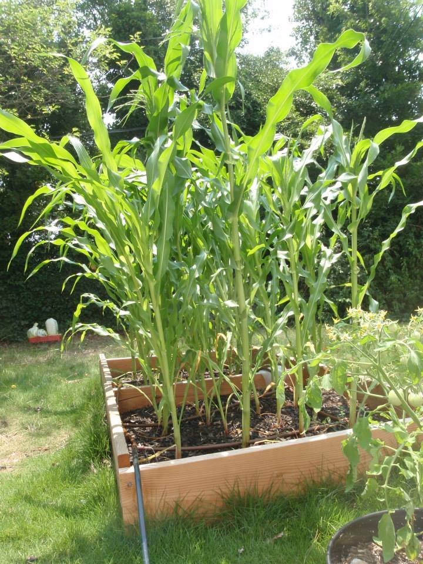

On Vegetable Gardening

6/9/2019
I've been growing vegetables for a few years. It's pretty fun bringing life from the seed into
this planet. It also takes a little bit of work. But before I begin, I have to define what a
"vegetable" due to a lot of confusion. The US congress has declared "pizza sauce" as a vegetable
serving. And then people end up mutating this into "pizza is a vegetable." It's like the
"telephone game."
The real definition of a fruit is an enlarged ovary from a plant. Plants will eventually have
flowers which will get fertilized by other plants or itself (depends on the plant). The flowers
will then turn into fruits like: tomatoes, apples, peppers, corn, blueberries, avocados,
cucumbers, peas.
The real definition of a vegetable is anything that isn't the fruit such as: cabbages (leaves),
lettuce (leaves), asparagus (young plant), potatoes (roots), broccoli (flower head), carrots
(roots).
Some fruits are called vegetables due to (as far as I know) people mixing up the definitions. To
be fair, I didn't know that broccoli was an unbloomed flower head until I started gardening as
an adult. I'm sure the average person has never grown anything other than those 4th-grade
plant-in-a-cup that ends up dying.
All you need is some good dirt, some sun, some fertilizer and some water. Growing vegetables
isn't like growing a weed however. It ain't that easy.
I liken this experience to raising kids. You set them up for success in the early years
and then they're good forever. Otherwise, they become susceptible to pests and disease and
fruitlessness.
Plant Selection
To start off, you have to decide what kind of vegetables you want.
You can go to a store and buy a some partially grown vegetables and save some time and enjoy
a plant for an extra month compared to that grown from seed.
If you'd like some more exotic varieties, you can visit a place like
Burpee and buy some weird varieties. Like blue potatoes,
red corn, pear-shaped tomatoes, "walking" onions, and more.
Some specific plants enjoy the company of other specific plants. Some plants do not like
other plants. This is called "companion planting." Don't plant the things from the same family
for 2 years in the same soil. There are specific diseases and pests that may be lurking from
last year's harvest. You may be surprised that watermelons and cucumbers come from the same
family. (wiki)
Every plant germinates faster in specific temperatures. After germination, their desired
temperature may change. You'll have to be careful for "frost." You'll have to check the
last frost date for where you are at. If not, your plant may freeze at night and die.
The Plot
Pick an area that gets plenty of sunlight. These vegetable plants need as much
sunlight as possible. At least 8 hours of "Full Sun." It should be free of human
and animal pests. You can stink up the place with your daily presence to scare
animals. Attempt to loosen the soil with the use of tools like the garden claw
or a pickaxe. Go as low as you can go. Then pile on more loose soil on top.
If you are growing plants from a container, then use some of that sterile
Miracle-Gro soil. It'll be free of weed seeds which normally infest ground soil
with infinite amounts. Ensure that your future plant has enough dirt.
(ref)
You may need to enrich the soil with compost. You can even buy some worms to help aerate
and loosen the soil and create more nutrients.
Planting
If you are growing by seed, each plant has specific instructions with sowing and spacing. They're normally written on the back of the seed packet. I normally plant multiple seeds and then prune the weaker seedlings. You maintain spacing so the plants aren't all choking each other. Some plants may have specific needs. For example, corn has a shallow root system. So they will require a drip irrigation system to keep the top-soil constantly moist.
Start
I normally use Miracle-Gro soil. It's dark, earthy-smelling soil that's moist and porous.
The porous soil allows water to freely move around and the roots to push through. The pH level
(pH 7) is around neutral so most plants will grow with this soil. Some plants enjoy more
acidic (towards pH 0) or basic (towards pH 14).
Plants survive off of 3 key nutrients. They are nitrogen, phosphorus, and potassium. Also known
as "NPK." If you see 3 numbers on plant food, they refer to the NPK ratio respectively. Use
more nitrogen for more leaf growth. More phosphorus for more flowers and fruits. Potassium
is good for roots and general health. I use Miracle-Gro all-purpose fertilizer once every 2
weeks (if needed). Too many nutrients will kill the plant.
You'll need to water deeply to give the plants a reason to grow their roots even lower. You
can drown the plant so don't water until the top is completely flooded. Don't water at night
since there's no sun to help evaporate the water. The excess moisture will cause mold and diease.
If you see weeds, be careful if they are near your seedlings. Their roots may be intertwined.
You may need to just cut their leaves and cover them up to prevent them from getting sun. You
may want to use mulch to prevent weeds from getting through, to raise soil temperature, and to
retain moisture. You can also use covers or mini-green houses for a similiar result.
Middle
The plant is now growing well. Water deeply, fertilize if needed, and kill the pests.
You may want to switch to a fertilizer with a higher phosphorus ratio to encourage flowering.
The more fruit you pick, the more fruit the plant grows. Some fruit can become overripe and
disgusting. Cucumbers can become massive and woody. Corn can become deflated and dried. Some
plants require pruning scissors to cleanly cut off the fruit. Sometimes, you can just twist
and pull gently.
Your plants should be large enough to prevent sunlight from getting through the rest of the
soil. This will help prevent weeds.
If your plants are turning yellow, you may need to fertilize with nitrogen.
End
The plant is now in its last phase of life. Fall is here. The plants will now wilt and turn yellow for good. A lot of these vegetable plants only live as "annuals," only one year. If you live in a warmer area, your plant may live longer than one year (perennials) such as peppers in Florida. You can take your dead plants and then put them into compost pile where they will rot and turn into new soil.
Composting
Composting is where you take a bunch of rotting stuff and put it in a pile or a container. It may take 1-2 for the dead matter to become earthy-smelling, black, rich soil. I don't recommend using meat since this will drive the nearby wildlife insane. You can buy a composting bin or build your own.
Problems
If your plants are perfectly healthy then they are more resistant to pests and disease. However, if your plants are dying due to lack of sun or too much rain or not enough nutrients, then they make for easy targets for bugs, disease, and mold.
Pests and Diease
For tomatoes and peppers, you may encounter "blossom end rot." This is when your plants
appear to be rotting. You will need to add calcium in the form of bonemeal.
If you have some bugs, you can either invite some bug killers. One time I had a biblical
aphid infestation on my Silver Queen corn. Aphids look like little pale green dots. I
bought some ladybugs to kill all of the aphids. You can also invite some birds.
For some diseases, you may need to cut off pieces of the plant or even kill the whole plant
to prevent further infestation.
Reproduction
Some methods yield better results than others for some plants. Some plants reproduce either by:
- Cloning : You can clone the tomato plant with just a piece of the plant. A branch can grow roots. Potatoes can clone themselves from pieces (called seed potatoes).
- Seeds : Just wait until the plant fruits and then let the seeds overripen and dry.
- Grafting: You can cut off a branch off of one plant and stick it on another plant. This works for some plants.
Misc.
Mushrooms are ok. Clovers will put nitrogen back in the soil so they're ok too.
Conclusion
This is just the basics. I've just summarized everything in one sitting from memory so I may be missing some details. This is the book I read many years ago. (book) If you are looking for something more complicated, you should check out this book on Marijuana growing. These people are super serious. (book)